9/10 users mentioned that the web experience feels more like a festival website.

Refreshed the Tet Festival website with vibrant, culturally inspired branding and a more intuitive user experience for 30,000 annual visitors.
The Vietnamese American Youth Alliance (VAYA) is a nonprofit dedicated to empowering Vietnamese American youth through leadership development, cultural awareness, social activism, & community building.
Each year, VAYA hosts the Lunar New Year Tết Festival in San Diego, one of the organization’s largest cultural events (attracting 30,000+ people each year!). I contributed as a designer for the 2025 festival website, helping shape its digital experience.
Tet Festival (Tết) is the Vietnamese Lunar New Year celebration, marking the arrival of spring and the start of a new year. It’s a time for family gatherings, honoring ancestors, and celebrating with traditional food, performances, and cultural festivities.
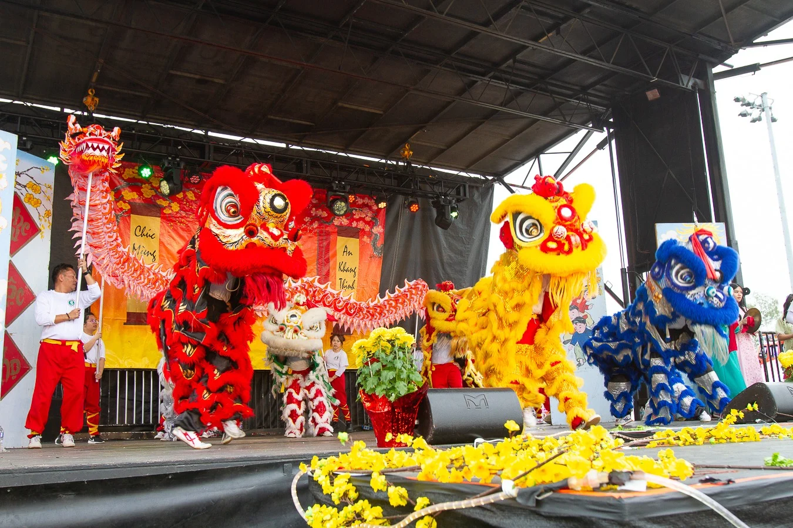
In the past, festival attendees relied on social media platforms like Instagram to stay updated. However, discussions revealed that most ultimately turned to the official website for the latest information.
Despite being the primary source, the website still left many feeling confused about the events offered.
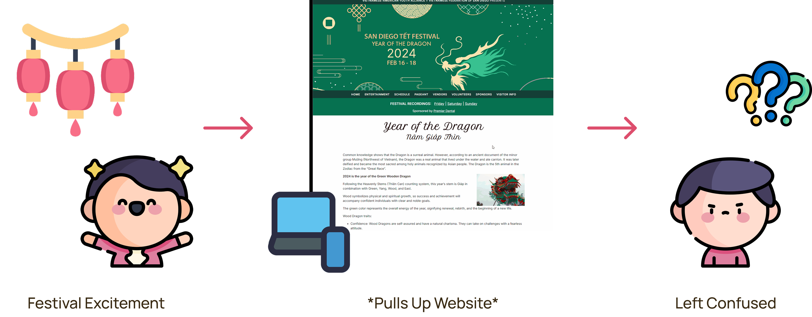
Festival visitors are eager to immerse themselves in Vietnamese culture and create memorable experiences with friends and family.
Research on last year’s website showed that the festival’s wide range of events can feel overwhelming and lacks a clear sense of Vietnamese cultural identity, making it difficult for attendees to find activities that meaningfully enhance their cultural experience.
Festival experience that is memorable and enhances exposure to Vietnamese culture.
Organization needs to see a raise in attendees immersing themselves in Vietnamese culture.
Through interviews with 10+ people who have gone to the festival in the past & those who are interested in going, I came across 3 common insights that users mentioned when it came to their experience with the festival website.
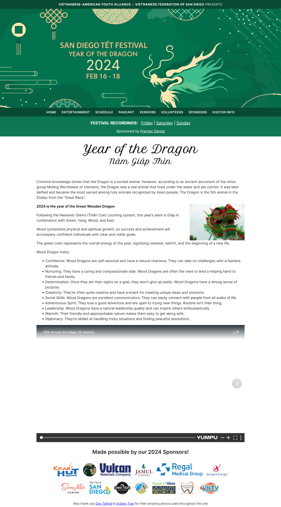
First impressions of the web experience do not remind visitors of Lunar New Year.
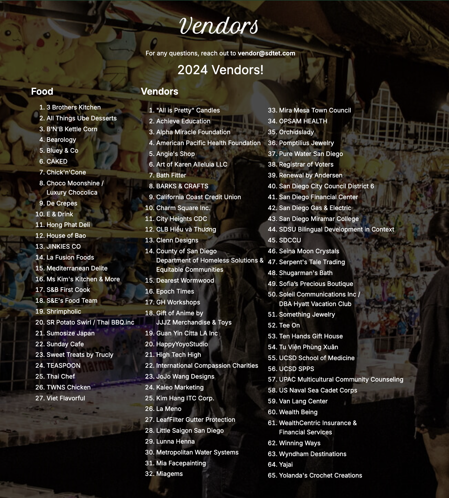
Unstructured sections makes it challenging to view what the festival has to offer.

A repetitive design style does not effectively highlight the festival’s major events.
With this…
How might we enhance the branding of the San Diego Tet Festival web experience to better capture the spirit of the Vietnamese Lunar New Year & highlight activities that help attendees immerse themselves in the culture?
Initial website impressions may seem like the only research rationale needed to continue with the web experience enhancement.
However, it was important to gather insights beyond the web experience to understand why people choose to attend the festival in the first place. Interviews with past and prospective attendees revealed 3 key insights into why people attend the festival.
Vietnamese attendees that have gone to this festival & similar events do so to feel more connected with their culture.
Both Vietnamese & non-Vietnamese attendees go to the festival to have a good time while learning about what the culture has to offer.
Most past attendees and those interested in the festival attend to create lasting memories with friends and family.
After analyzing the web experience and understanding the “why” behind festival attendance, I defined the following goals to guide the design process for the website revamp.
To create a festive and educational web experience that reflects the spirit of Lunar New Year.
To streamline event discovery so attendees can quickly identify activities that match their interests.
To help users spot top events that would deepen their engagement with Vietnamese culture.
As mentioned earlier, festival attendees are the primary user and vendors are the secondary user of the festival website. Despite using the same product, they use it for different purposes.
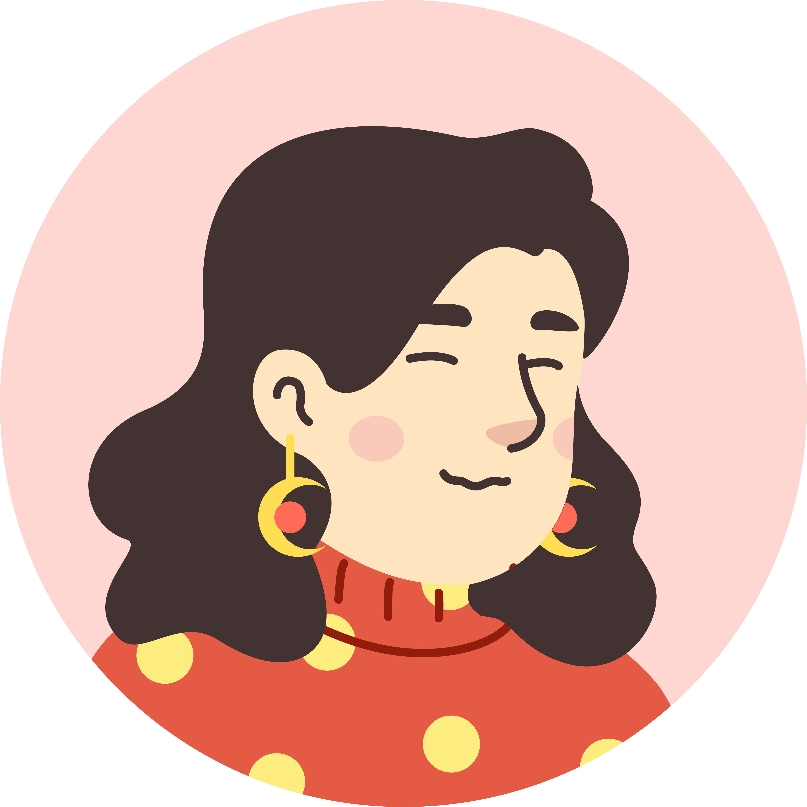
With over 30,000 attendees each year, their motivation for attending the festival is to have fun, connect with Vietnamese culture, and introduce it to friends.
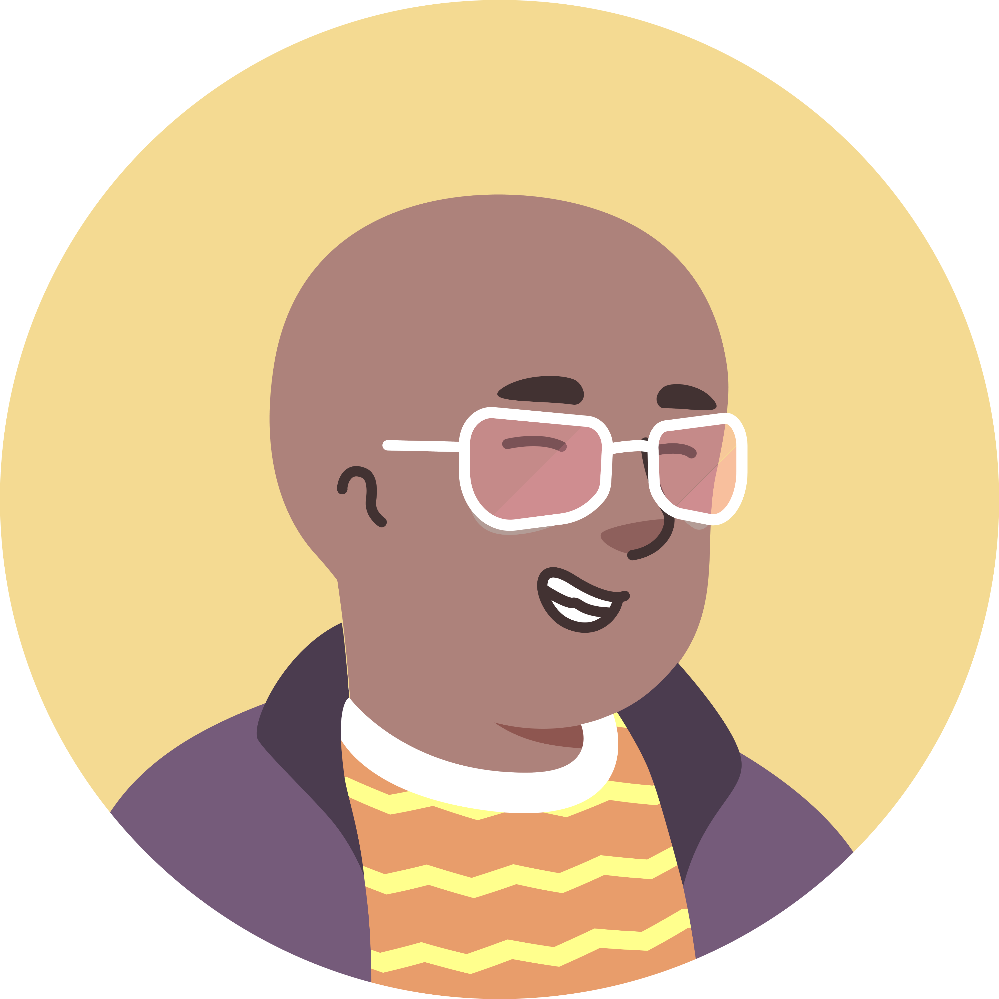
Motivated to attend mainly as a vendor, they need to understand the required permissions and expectations in order to successfully sell their products.
To collect some inspiration for our design, research was conducted on existing festival websites and the design decisions they made to present themselves.
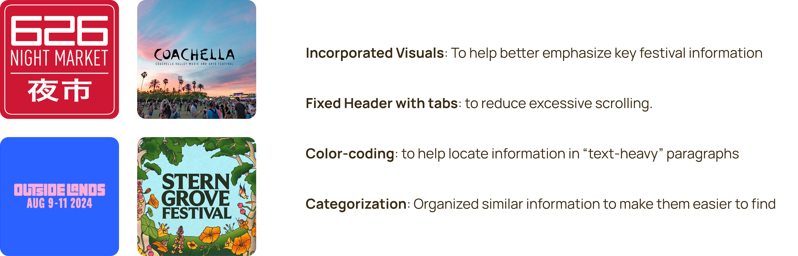
During the ideation phase, I organized potential solutions aligned with the goals defined earlier in the process. Establishing these goals early on helped generate solutions that directly addressed the identified user problems.
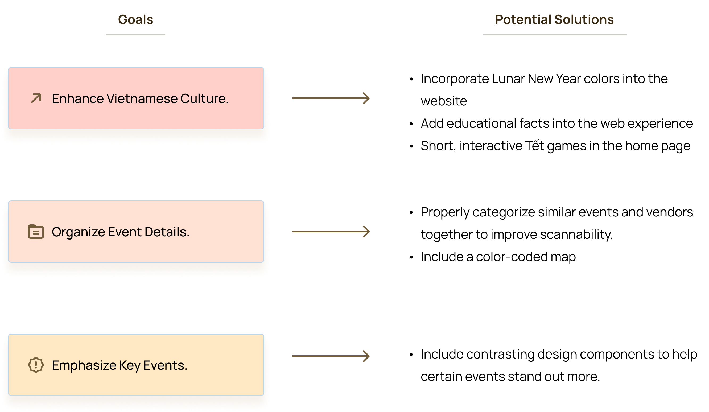
In collaboration with VAYA, I gathered & documented requirements for the festival website. Afterwards, I translated them into an information architecture to structure the web experience and support intuitive discovery of essential information.
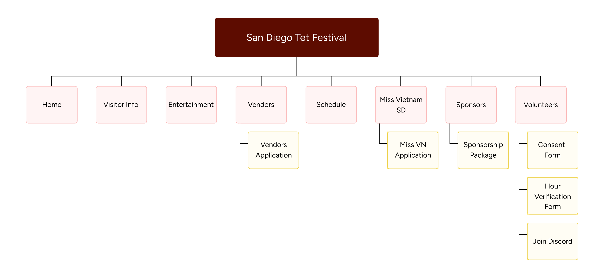
Pre-post studies with 10+ participants was conducted to evaluate whether the design concepts functioned as intended. Iterations were then made based on user interactions with the product, such as the time required to complete key tasks within the web experience.
I started off by assigning users the task of finding an interesting fact they learned about Vietnamese Lunar New Year from the home page alone. I then measured how long it took to complete this task & whether they felt like they learned something new about the holiday.
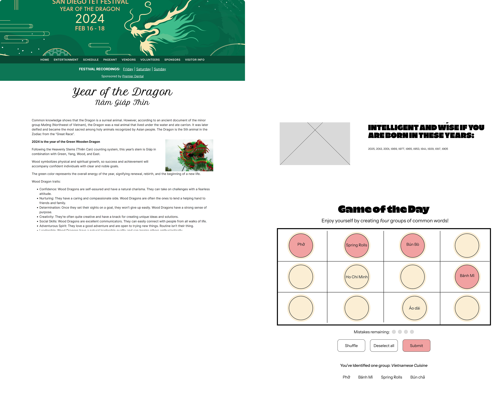

Next, participants were asked to locate vendors across categories such as food and souvenirs. The goal of this section was to observe navigation behavior, record task completion time, and understand why tasks took a certain amount of time.


Lastly, participants were asked which events they would be most likely to attend. The goal of this section was to measure demand across festival events & understand why certain events were preferred over others. Throughout the iteration process, it was also important to design in a way that encourages users to attend the headliners.
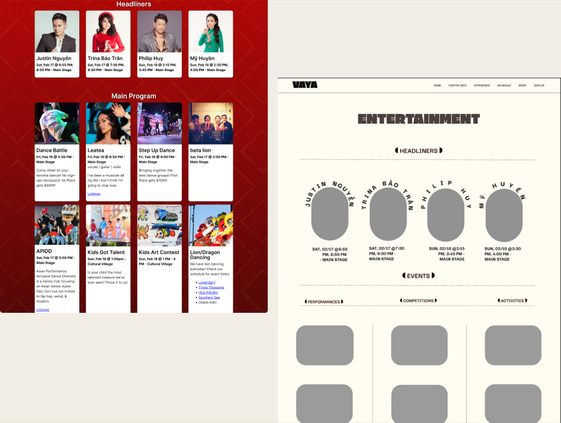

Goal 1
Users can quickly browse through fun facts about Vietnamese New Year by horizontally scrolling through the red envelopes. This helps users learn more about the event, while enhancing festivity.
Goal 2
Users can scan through the list of vendors they are interested in and effectively locate them on the map depending on the header color. Attendees interested in becoming vendors can apply & view the vendor requirements.
Goal 3
Contrasting designs for headliners & events emphasizes important events that day, helping users determine the following events that allow them exposure to Vietnamese culture.
By defining the goals early on in the design process, it helped identify success metrics more efficiently. As a result, I came across 3 success metrics (2 user metrics and 1 business metric).
9/10 users mentioned that the web experience feels more like a festival website.
8/10 users found it easier to find events that would help them learn more about Vietnamese culture.
Over half of the users mentioned that they saw themselves attending the Lunar New Year festival.
As a Vietnamese myself, I found it very fun and meaningful to be able to work on a project catered towards users with a similar background as me. I came across 3 learning insights throughout my experience with this project.
Don’t be afraid to experiment with bold & festive designs as long as it’s feasible.
Sometimes, less is not more with a festive website that encourages festive designs.
Learn to have fun with visual design while keeping track of user needs.
Thank you for reading!